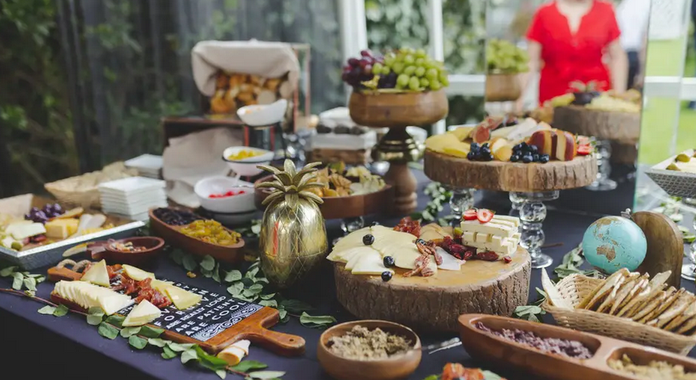

Construcciòn
El proyecto está construido utilizando una variedad de tecnologías web y de desarrollo de software. Se emplea Java como lenguaje principal de programación, CSS y HTML para el diseño y presentación de la interfaz de usuario, y MySQL como sistema de gestión de bases de datos para almacenar y recuperar información relacionada con los eventos y la comunicación.